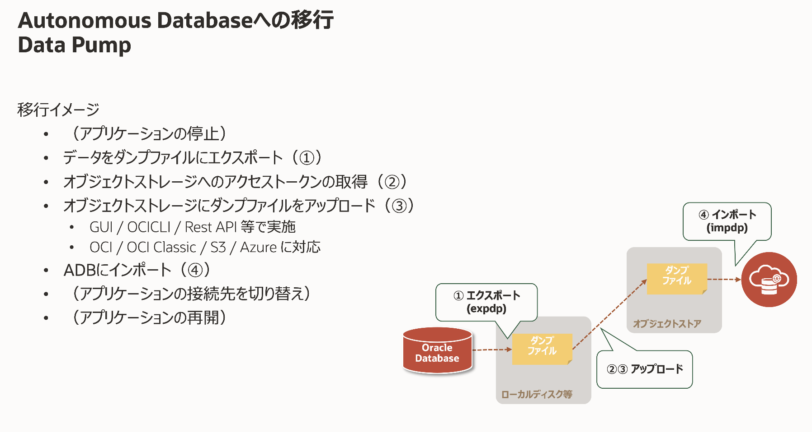
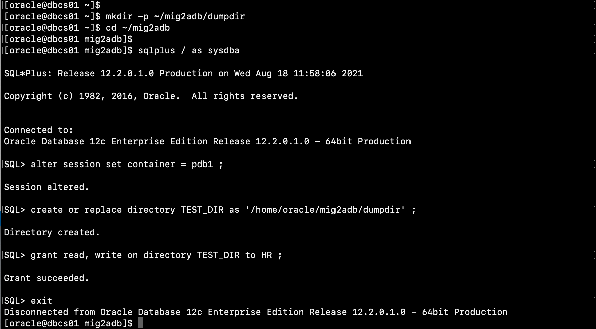
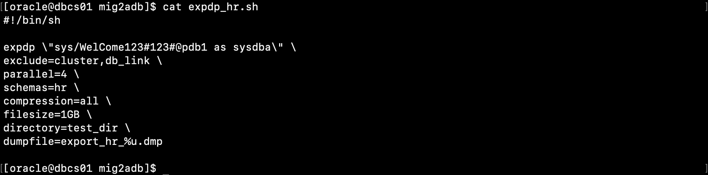
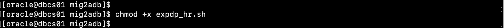
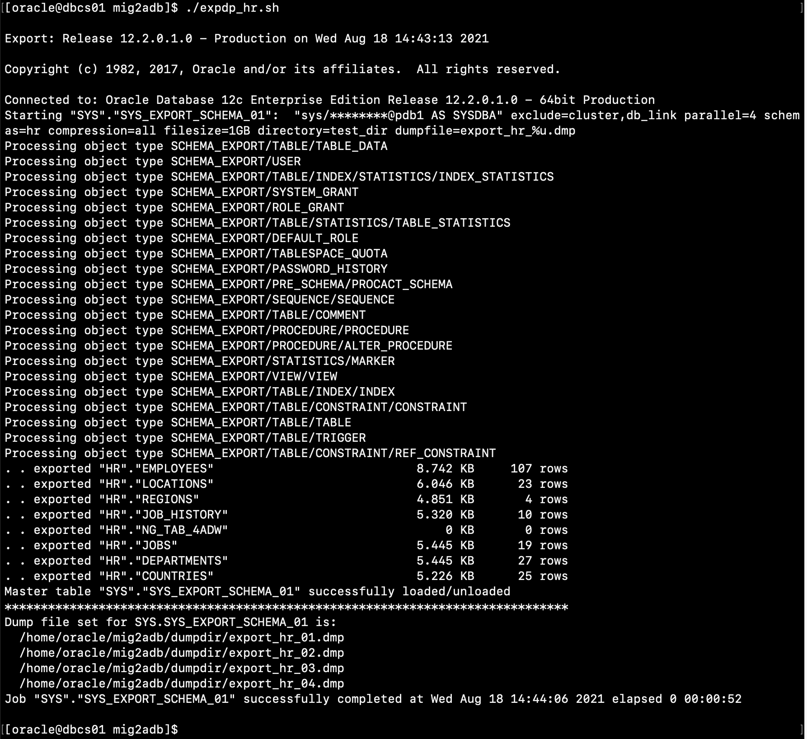
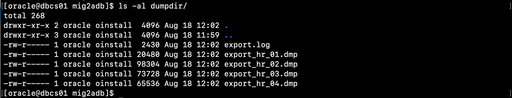
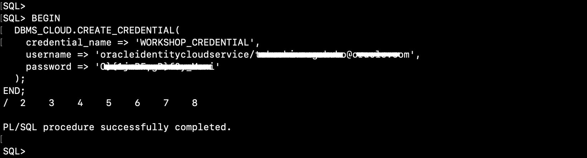
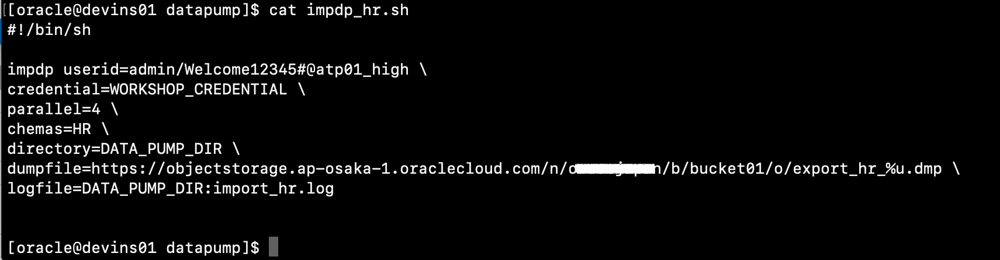
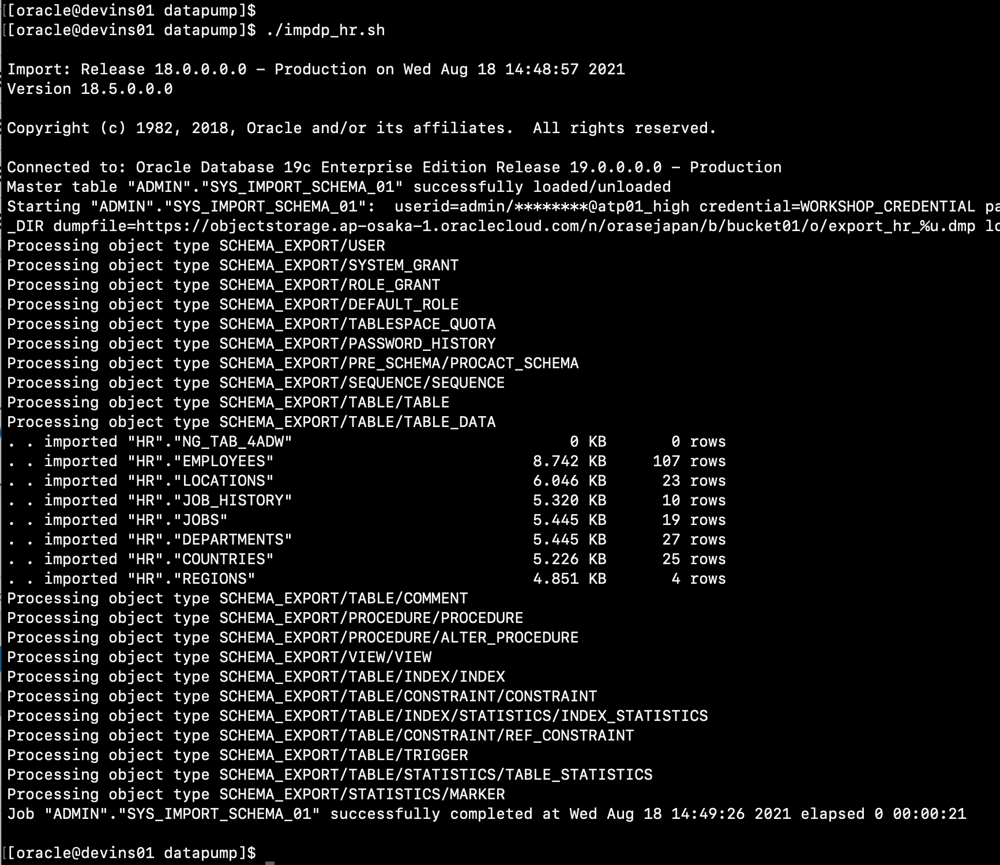
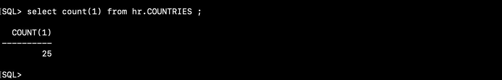

<!doctype html>
<!--
  Minimal Mistakes Jekyll Theme 4.26.1 by Michael Rose
  Copyright 2013-2024 Michael Rose - mademistakes.com | @mmistakes
  Free for personal and commercial use under the MIT license
  https://github.com/mmistakes/minimal-mistakes/blob/master/LICENSE
-->

<html lang="ja" class="no-js">
  <head>
    <meta charset="utf-8">

<!-- begin _includes/seo.html --><title>303 : Data Pumpを利用してデータを移行しよう | Oracle Cloud Infrastructure チュートリアル</title>
<meta name="description" content="まずはシンプルにData Pumpを利用した移行方法についてご紹介します。">


  <meta name="author" content="Oracle Japan Solution Engineers">
  
  <meta property="article:author" content="Oracle Japan Solution Engineers">
  


<meta property="og:type" content="article">
<meta property="og:locale" content="ja_JP">
<meta property="og:site_name" content="Oracle Cloud Infrastructure チュートリアル">
<meta property="og:title" content="303 : Data Pumpを利用してデータを移行しよう">
<meta property="og:url" content="https://oracle-japan.github.io/ocitutorials/adb/adb303-datapump/">


  <meta property="og:description" content="まずはシンプルにData Pumpを利用した移行方法についてご紹介します。">


  <meta property="og:image" content="https://oracle-japan.github.io/ocitutorials/adb/adb303-xxx/img00x.png">


  <meta property="article:published_time" content="2024-05-13T14:50:45+09:00">


<link rel="canonical" href="https://oracle-japan.github.io/ocitutorials/adb/adb303-datapump/">


<!-- end _includes/seo.html -->


  <link href="/ocitutorials/feed.xml" type="application/atom+xml" rel="alternate" title="Oracle Cloud Infrastructure チュートリアル Feed">
<meta name="viewport" content="width=device-width, initial-scale=1.0">

<script type="text/javascript">
  document.documentElement.className = document.documentElement.className.replace(/\bno-js\b/g, '') + ' js ';
  
</script>

<!-- For all browsers -->
<link rel="stylesheet" href="/ocitutorials/assets/css/main.css">
<link rel="preload" href="https://cdn.jsdelivr.net/npm/@fortawesome/fontawesome-free@latest/css/all.min.css" as="style" onload="this.onload=null;this.rel='stylesheet'">
<noscript><link rel="stylesheet" href="https://cdn.jsdelivr.net/npm/@fortawesome/fontawesome-free@latest/css/all.min.css"></noscript>


    <!-- start custom head snippets -->

<!-- insert favicons. use https://realfavicongenerator.net/ -->

<!-- end custom head snippets -->

  </head>

  <body class="layout--single">
    <nav class="skip-links">
  <ul>
    <li><a href="#site-nav" class="screen-reader-shortcut">Skip to primary navigation</a></li>
    <li><a href="#main" class="screen-reader-shortcut">Skip to content</a></li>
    <li><a href="#footer" class="screen-reader-shortcut">Skip to footer</a></li>
  </ul>
</nav>

    

<div class="masthead">
  <div class="masthead__inner-wrap">
    <div class="masthead__menu">
      <nav id="site-nav" class="greedy-nav">
        
          <a class="site-logo" href="/ocitutorials/"></a>
        
        <a class="site-title" href="/ocitutorials/">
          OCI チュートリアル
          <span class="site-subtitle">Oracle Cloud Infrastructure を使ってみよう</span>
        </a>
        <ul class="visible-links"><li class="masthead__menu-item">
              <a
                href="/ocitutorials/#%E3%83%81%E3%83%A5%E3%83%BC%E3%83%88%E3%83%AA%E3%82%A2%E3%83%AB%E3%82%B3%E3%83%B3%E3%83%86%E3%83%B3%E3%83%84%E4%B8%80%E8%A6%A7"
                
                
              >チュートリアル一覧</a>
            </li><li class="masthead__menu-item">
              <a
                href="/ocitutorials/about/"
                
                
              >このサイトについて</a>
            </li></ul>
        
        <button class="search__toggle" type="button">
          <span class="visually-hidden">Toggle search</span>
          <i class="fas fa-search"></i>
        </button>
        
        <button class="greedy-nav__toggle hidden" type="button">
          <span class="visually-hidden">メニュー</span>
          <div class="navicon"></div>
        </button>
        <ul class="hidden-links hidden"></ul>
      </nav>
    </div>
  </div>
</div>


    <div class="initial-content">
      
  


<div class="page__hero--overlay"
  style=" background-image: linear-gradient(rgba(34, 66, 55, 0.7), rgba(34, 66, 55, 0.7)), url('/ocitutorials/adb/adb303-xxx/img00x.png');"
>
  
    <div class="wrapper">
      <h1 id="page-title" class="page__title" itemprop="headline">
        
          303 : Data Pumpを利用してデータを移行しよう

        
      </h1>
      
        <p class="page__lead">まずはシンプルにData Pumpを利用した移行方法についてご紹介します。
</p>
      
      


      
    </div>
  
  
</div>


  
    


<nav class="breadcrumbs">
  <ol itemscope itemtype="https://schema.org/BreadcrumbList">
    
    
    
      
        <li itemprop="itemListElement" itemscope itemtype="https://schema.org/ListItem">
          <a href="/ocitutorials/" itemprop="item"><span itemprop="name">ホーム</span></a>

          <meta itemprop="position" content="1" />
        </li>
        <span class="sep">></span>
      
      
        
        <li itemprop="itemListElement" itemscope itemtype="https://schema.org/ListItem">
          <a href="/ocitutorials/adb" itemprop="item"><span itemprop="name">Adb</span></a>
          <meta itemprop="position" content="2" />
        </li>
        <span class="sep">></span>
      
    
      
      
        <li class="current">303 : Data Pumpを利用してデータを移行しよう</li>
      
    
  </ol>
</nav>

  


<div id="main" role="main">
  
  <div class="sidebar sticky">
  
  
    
      
      
      
      
    
    
      

<nav class="nav__list">
  
  <input id="ac-toc" name="accordion-toc" type="checkbox" />
  <label for="ac-toc">メニュー</label>
  <ul class="nav__items">
    <li>
      
      <a href=""><span class="nav__sub-title">Oracle Database編 - Autonomous Database</span></a>
      <ul>
        
        
          <p></p><li><a href="/ocitutorials/adb/adb101-provisioning/">101: ADBインスタンスを作成してみよう</a></li></p>
        
          <p></p><li><a href="/ocitutorials/adb/adb102-dataload/">102: ADBにデータをロードしよう(Database Actions)</a></li></p>
        
          <p></p><li><a href="/ocitutorials/adb/adb103-livelabs/">103: Oracle LiveLabsのご紹介</a></li></p>
        
          <p></p><li><a href="/ocitutorials/adb/adb104-connect-using-wallet/">104: クレデンシャル・ウォレットを利用して接続してみよう</a></li></p>
        
          <p></p><li><a href="/ocitutorials/adb/adb105-create-apex-app/">105: ADBの付属ツールで簡易アプリを作成しよう(APEX)</a></li></p>
        
          <p></p><li><a href="/ocitutorials/adb/adb106-json/">106: ADBでコンバージド・データベースを体験しよう（JSONデータの操作）</a></li></p>
        
          <p></p><li><a href="/ocitutorials/adb/adb107-machine-learning/">107: ADBの付属ツールで機械学習(予測モデルからデプロイまで)</a></li></p>
        
          <p></p><li><a href="/ocitutorials/adb/adb108-walletless/">108: 接続文字列を利用して接続してみよう</a></li></p>
        
          <p></p><li><a href="/ocitutorials/adb/adb109-private-endpoint/">109: プライベート・エンドポイントのADBを作成してみよう</a></li></p>
        
          <p></p><li><a href="/ocitutorials/adb/adb110-analyze-using-oad/">110: Oracle Analytics Desktopを使ってデータを見える化してみよう</a></li></p>
        
          <p></p><li><a href="/ocitutorials/adb/adb201-service-names/">201: 接続サービスの理解</a></li></p>
        
          <p></p><li><a href="/ocitutorials/adb/adb202-dataload-dbms-cloud/">202: コマンドラインから大量データをロードしてみよう(DBMS_CLOUD)</a></li></p>
        
          <p></p><li><a href="/ocitutorials/adb/adb203-bulk-query/">203: 分析系クエリの実行(Star Schema Benchmark)</a></li></p>
        
          <p></p><li><a href="/ocitutorials/adb/adb204-setup-VM/">204: 開発者向け仮想マシンのセットアップ方法</a></li></p>
        
          <p></p><li><a href="/ocitutorials/adb/adb205-swingbench/">205: オンライン・トランザクション系のアプリを実行してみよう(Swingbench)</a></li></p>
        
          <p></p><li><a href="/ocitutorials/adb/adb206-appdev-nodejs/">206: Node.jsによるADB上でのアプリ開発</a></li></p>
        
          <p></p><li><a href="/ocitutorials/adb/adb207-appdev-python/">207: PythonによるADB上でのアプリ開発</a></li></p>
        
          <p></p><li><a href="/ocitutorials/adb/adb208-oml-notebook/">208: Oracle Machine Learningで機械学習をしよう</a></li></p>
        
          <p></p><li><a href="/ocitutorials/adb/adb209-DV/">209 : Database Vaultによる職務分掌に基づいたアクセス制御の実装</a></li></p>
        
          <p></p><li><a href="/ocitutorials/adb/adb210-VPD/">210 : 仮想プライベートデータベース(VPD:Virtual Private Database)による柔軟で細やかなアクセス制御の実装</a></li></p>
        
          <p></p><li><a href="/ocitutorials/adb/adb211-clone/">211: クローン機能を活用しよう</a></li></p>
        
          <p></p><li><a href="/ocitutorials/adb/adb212-audg/">212: Autonomous Data Guardを構成してみよう</a></li></p>
        
          <p></p><li><a href="/ocitutorials/adb/adb213-tac/">213 : Application Continuityを設定しよう</a></li></p>
        
          <p></p><li><a href="/ocitutorials/adb/adb214-spatial-studio/">214 : Spatial Studio で地理情報を扱おう</a></li></p>
        
          <p></p><li><a href="/ocitutorials/adb/adb215-graph/">215 : Graph Studioで金融取引の分析を行う</a></li></p>
        
          <p></p><li><a href="/ocitutorials/adb/adb216-patch-spa/">216 : SQL Performance Analyzer(SPA)によるパッチ適用のテストソリューション</a></li></p>
        
          <p></p><li><a href="/ocitutorials/adb/adb217-use-database-actions/">217: Database Actions を使ってみよう</a></li></p>
        
          <p></p><li><a href="/ocitutorials/adb/adb218-refreshable-clone/">218 : リフレッシュ可能クローンを活用しよう</a></li></p>
        
          <p></p><li><a href="/ocitutorials/adb/adb219-autoindexing/">219: Automatic Indexingを体験してみよう </a></li></p>
        
          <p></p><li><a href="/ocitutorials/adb/adb301-create-source-db/">301 : 移行元となるデータベースを作成しよう</a></li></p>
        
          <p></p><li><a href="/ocitutorials/adb/adb302-cpat/">302 : Cloud Premigration Advisor Tool(CPAT)を活用しよう</a></li></p>
        
          <p></p><li><a href="/ocitutorials/adb/adb303-datapump/" class="active">303 : Data Pumpを利用してデータを移行しよう</a></li></p>
        
          <p></p><li><a href="/ocitutorials/adb/adb304-database-migration-prep/">304 : OCI Database Migration Serviceを使用したデータベース移行の前準備</a></li></p>
        
          <p></p><li><a href="/ocitutorials/adb/adb305-database-migration-offline/">305 : OCI Database Migration Serviceを使用したデータベースのオフライン移行</a></li></p>
        
          <p></p><li><a href="/ocitutorials/adb/adb306-database-migration-online/">306 : OCI Database Migration Serviceを使用したデータベースのオンライン移行</a></li></p>
        
          <p></p><li><a href="/ocitutorials/adb/adb401-oci-goldengate/">401 : OCI GoldenGateによるBaseDBからADBへのデータ連携</a></li></p>
        
          <p></p><li><a href="/ocitutorials/adb/adb402-database-link/">402 : Database Linkによるデータ連携</a></li></p>
        
          <p></p><li><a href="/ocitutorials/adb/adb403-data-transforms/">403 : Data Transformsを使ってみよう</a></li></p>
        
          <p></p><li><a href="/ocitutorials/adb/adb501-ocicli/">501: OCICLIを利用したインスタンス操作</a></li></p>
        
          <p></p><li><a href="/ocitutorials/adb/adb502-report/">502: 各種設定の確認、レポートの取得</a></li></p>
        
          <p></p><li><a href="/ocitutorials/adb/adb503-monitoring/">503 : ADBインスタンスの監視設定をしてみよう</a></li></p>
        
          <p></p><li><a href="/ocitutorials/adb/adb504-audit/">504 : 監査をしてみよう</a></li></p>
        
          <p></p><li><a href="/ocitutorials/adb/adb505-backup/">505 : Autonomous Databaseのバックアップとリストアを体感しよう</a></li></p>
        
          <p></p><li><a href="/ocitutorials/adb/adb506-sr/">506: サポートサービスへの問い合わせ(Service Requestの起票)</a></li></p>
        
          <p></p><li><a href="/ocitutorials/adb/adb601-moviestream-load/">601: ADWでMovieStreamデータのロード・更新をしよう</a></li></p>
        
          <p></p><li><a href="/ocitutorials/adb/adb602-moviestream-analysis/">602: ADWでMovieStreamデータの分析をしよう</a></li></p>
        
          <p></p><li><a href="/ocitutorials/adb/adb603-data-catalog/">603 : データ・カタログを使ってメタデータを収集しよう</a></li></p>
        
          <p></p><li><a href="/ocitutorials/adb/adb701-adbd/">ADB-Dの環境を作成してみよう</a></li></p>
        
      </ul>
    </li>
  </ul>
</nav>
    
  
  </div>


  <article class="page" itemscope itemtype="https://schema.org/CreativeWork">
    <meta itemprop="headline" content="303 : Data Pumpを利用してデータを移行しよう">
    <meta itemprop="description" content="まずはシンプルにData Pumpを利用した移行方法についてご紹介します。">
    <meta itemprop="datePublished" content="2024-05-13T14:50:45+09:00">
    

    <div class="page__inner-wrap">
      

      <section class="page__content" itemprop="text">
        
          <aside class="sidebar__right sticky">
            <nav class="toc">
              <header><h4 class="nav__title"><i class="fas fa-file-alt"></i> 目次</h4></header>
              <ul class="toc__menu"><li><a href="#はじめに">はじめに</a></li><li><a href="#1-移行対象のスキーマをエクスポート">1. 移行対象のスキーマをエクスポート</a><ul><li><a href="#1-1-ディレクトリオブジェクトの作成">1-1. ディレクトリ・オブジェクトの作成</a></li><li><a href="#1-2-エクスポートスクリプトを用意">1-2. エクスポート・スクリプトを用意</a></li><li><a href="#1-3-エクスポートを実施">1-3. エクスポートを実施</a></li></ul></li><li><a href="#2-オブジェクトストレージへのアクセストークンを取得">2. オブジェクトストレージへのアクセストークンを取得</a></li><li><a href="#3-ダンプファイルをオブジェクトストレージにアップロード">3. ダンプファイルをオブジェクトストレージにアップロード</a></li><li><a href="#4-autonomous-databaseへのインポート">4. Autonomous Databaseへのインポート</a><ul><li><a href="#4-1-仮想マシンへのアクセス">4-1. 仮想マシンへのアクセス</a></li><li><a href="#4-2-クレデンシャルの登録">4-2. クレデンシャルの登録</a></li><li><a href="#4-3-インポートスクリプトを用意">4-3. インポート・スクリプトを用意</a></li><li><a href="#4-4-インポートを実施">4-4. インポートを実施</a></li><li><a href="#4-5-インポート結果の確認">4-5. インポート結果の確認</a></li></ul></li><li><a href="#よくある質問やtips">よくある質問やTips</a></li><li><a href="#おわりに">おわりに</a></li><li><a href="#参考資料">参考資料</a></li></ul>
            </nav>
          </aside>
        
        <p><a id="anchor0"></a></p>

<h1 id="はじめに">はじめに</h1>

<p>Oracle Databaseのデータ移行として、ここでは従来からよく利用されるData Pumpを利用してAutonomous Databaseに移行する手順をご紹介します。</p>

<p>先の<a href="/ocitutorials/adb/adb301-create-source-db" target="_blank">「301 : 移行元となるデータベースを作成しよう」</a>にて事前に作成しておいたBaseDBインスタンス上のHRスキーマを、以下の流れに沿ってAutonomous Databaseに移行してみたいと思います。</p>

<p></p>

<p><br /></p>

<p><strong>目次 :</strong></p>
<ul>
  <li><a href="#anchor1">1.移行対象のスキーマをエクスポート</a></li>
  <li><a href="#anchor2">2.オブジェクトストレージへのアクセストークンを取得</a></li>
  <li><a href="#anchor3">3.ダンプファイルをオブジェクトストレージにアップロード</a></li>
  <li><a href="#anchor4">4.Autonomous Databaseへのインポート</a></li>
</ul>

<p><a id="anchor0_1"></a></p>
<blockquote>
  <p>補足
チュートリアルを実施する上で、BaseDBインスタンスを用意できない場合や、どうしてもエクスポートが成功しないと言った場合は、以下よりエクスポート済みのダンプファイルを配置しておりますので、適宜ダウンロードください。
上記ステップ2から実施いただくことが可能です。</p>
  <ul>
    <li><a href="/ocitutorials/adb/adb303-datapump/export_hr_01.dmp">ダンプファイル(export_hr_01.dmp)のダウンロード</a></li>
    <li><a href="/ocitutorials/adb/adb303-datapump/export_hr_02.dmp">ダンプファイル(export_hr_02.dmp)のダウンロード</a></li>
    <li><a href="/ocitutorials/adb/adb303-datapump/export_hr_03.dmp">ダンプファイル(export_hr_03.dmp)のダウンロード</a></li>
    <li><a href="/ocitutorials/adb/adb303-datapump/export_hr_04.dmp">ダンプファイル(export_hr_04.dmp)のダウンロード</a></li>
  </ul>
</blockquote>

<p><br /></p>

<p><strong>前提条件 :</strong></p>
<ul>
  <li><a href="/ocitutorials/adb/adb204-setup-VM/" target="_blank">「204: マーケットプレイスからの仮想マシンのセットアップ方法」</a>を完了していること</li>
  <li><a href="/ocitutorials/adb/adb301-create-source-db" target="_blank">「301 : 移行元となるデータベースを作成しよう」</a>を完了していること</li>
</ul>

<p><br /></p>

<p><strong>所要時間 :</strong> 約30分</p>

<h2><br /></h2>
<p><a id="anchor1"></a></p>

<h1 id="1-移行対象のスキーマをエクスポート">1. 移行対象のスキーマをエクスポート</h1>
<p>HRスキーマをData Pumpを利用してBaseDBインスタンスのOS上のファイルシステムにエクスポートします。</p>

<blockquote>
  <p>（補足）</p>
  <ul>
    <li>本チュートリアルではOCI BaseDBにプリインストールされているData Pumpを利用しますが、12.2.0.1以前のOracle Clientを利用する場合や、その他詳細情報についてはマニュアル（ADW / ATP）を参照ください。</li>
    <li>パラレルオプションを利用する場合、ソースDBがEnterprise Editionである必要があります。</li>
    <li>圧縮オプションを利用する場合、ソースDBが11g以上でありAdvanced Compression Optionが必要になります。</li>
  </ul>
</blockquote>

<h2 id="1-1-ディレクトリオブジェクトの作成">1-1. ディレクトリ・オブジェクトの作成</h2>
<p>BaseDBインスタンス上のPDBに接続し、ダンプファイルの出力先を指定します。</p>

<ol>
  <li>
    <p>Tera Termを利用してBaseDBインスタンスにopcユーザーで接続します。</p>
  </li>
  <li>opc ユーザーからoracleユーザーにスイッチしておきます。
    <div class="language-sh highlighter-rouge"><div class="highlight"><pre class="highlight"><code><span class="nb">sudo </span>su - oracle
</code></pre></div>    </div>
  </li>
  <li>作業用ディレクトリを作成します。
    <div class="language-sh highlighter-rouge"><div class="highlight"><pre class="highlight"><code><span class="nb">mkdir</span> <span class="nt">-p</span> ~/mig2adb/dumpdir
<span class="nb">cd</span> ~/mig2adb
</code></pre></div>    </div>
  </li>
  <li>移行元のOracle Database にログインします。
    <div class="language-sh highlighter-rouge"><div class="highlight"><pre class="highlight"><code>sqlplus / as sysdba
</code></pre></div>    </div>
  </li>
  <li>PDBインスタンスに切り替えます。
    <div class="language-sql highlighter-rouge"><div class="highlight"><pre class="highlight"><code><span class="k">alter</span> <span class="k">session</span> <span class="k">set</span> <span class="n">container</span> <span class="o">=</span> <span class="n">pdb1</span> <span class="p">;</span>
</code></pre></div>    </div>
  </li>
  <li>ディレクトリ・オブジェクトを作成し、ダンプファイルの出力先をデータベースに登録します。
    <div class="language-sql highlighter-rouge"><div class="highlight"><pre class="highlight"><code><span class="k">create</span> <span class="k">or</span> <span class="k">replace</span> <span class="n">directory</span> <span class="n">TEST_DIR</span> <span class="k">as</span> <span class="s1">'/home/oracle/mig2adb/dumpdir'</span> <span class="p">;</span>
</code></pre></div>    </div>
  </li>
  <li>ディレクトリ・オブジェクトに対する操作権限をHRスキーマに付与しています。
    <div class="language-sql highlighter-rouge"><div class="highlight"><pre class="highlight"><code><span class="k">grant</span> <span class="k">read</span><span class="p">,</span> <span class="k">write</span> <span class="k">on</span> <span class="n">directory</span> <span class="n">TEST_DIR</span> <span class="k">to</span> <span class="n">HR</span> <span class="p">;</span>
</code></pre></div>    </div>
  </li>
  <li>SQL*Plusを終了します。
    <div class="language-sql highlighter-rouge"><div class="highlight"><pre class="highlight"><code><span class="n">exit</span>
</code></pre></div>    </div>
    <p>（作業イメージ）
</p>
  </li>
</ol>

<p><br /></p>

<h2 id="1-2-エクスポートスクリプトを用意">1-2. エクスポート・スクリプトを用意</h2>

<ol>
  <li>作業用ディレクトリに移動します。
    <div class="language-sh highlighter-rouge"><div class="highlight"><pre class="highlight"><code><span class="nb">cd</span> ~/mig2adb
</code></pre></div>    </div>
  </li>
  <li>エクスポートを実行するスクリプトを作成します。
    <div class="language-sh highlighter-rouge"><div class="highlight"><pre class="highlight"><code>vi expdp_hr.sh
</code></pre></div>    </div>
    <p>以下よりコピーし、貼り付けてください。</p>

    <div class="language-sh highlighter-rouge"><div class="highlight"><pre class="highlight"><code>
 <span class="c">#!/bin/sh</span>

 expdp <span class="se">\"</span>hr/WelCome123#123#@pdb1 <span class="se">\"</span> <span class="se">\</span>
 <span class="nv">exclude</span><span class="o">=</span>cluster,db_link <span class="se">\</span>
 <span class="nv">parallel</span><span class="o">=</span>4 <span class="se">\</span>
 <span class="nv">schemas</span><span class="o">=</span>hr <span class="se">\</span>
 <span class="nv">compression</span><span class="o">=</span>all <span class="se">\</span>
 <span class="nv">filesize</span><span class="o">=</span>1GB <span class="se">\</span>
 <span class="nv">directory</span><span class="o">=</span>test_dir <span class="se">\</span>
 <span class="nv">dumpfile</span><span class="o">=</span>export_hr_%u.dmp

</code></pre></div>    </div>

    <p>編集結果を確認します。</p>
    <div class="language-plaintext highlighter-rouge"><div class="highlight"><pre class="highlight"><code> cat expdp_hr.sh
</code></pre></div>    </div>
    <p></p>

    <blockquote>
      <ul>
        <li>データサイズが大きい場合は、データ転送、ロード性能の向上のため、parallelオプションを利用しましょう。指定する値は少なくとも移行先のADBのOCPU数と同じか、それよりも大きい値（2倍から3倍）がおススメです。</li>
        <li>dumpfile句に指定するファイル名にはワイルドカード（%u）を付けてください。複数のファイルを同時に出力することで高速化が可能です。</li>
        <li>filesize句は5GBよりも小さい値を指定してください。ブラウザ経由でオブジェクトストレージに転送できるデータは1ファイル辺り最大5GBの制限があるためです。</li>
        <li>excludeオプションを利用することで、不要なオブジェクトを除いてエクスポートすることが可能です。例えばADWを利用するような分析系のアプリの場合において、性能観点で付与した索引はExadataを利用すると不要になることが多いため、IndexをExcludeの引数に指定します。</li>
        <li>詳細は<a href="https://docs.oracle.com/cd/E83857_01/paas/autonomous-database/adbsa/load-data-data-pump.html#GUID-30DB1EEA-DB45-49EA-9E97-DF49A9968E24" target="_blank">「マニュアル(Autonomous DatabaseでのOracle Data Pumpを使用したデータのインポート)」</a>を参照ください。</li>
      </ul>
    </blockquote>
  </li>
</ol>

<h2 id="1-3-エクスポートを実施">1-3. エクスポートを実施</h2>

<ol>
  <li>実行権限を付与します。
    <div class="language-sh highlighter-rouge"><div class="highlight"><pre class="highlight"><code><span class="nb">chmod</span> +x expdp_hr.sh
</code></pre></div>    </div>
    <p>（作業イメージ）
</p>
  </li>
  <li>エクスポートを実行します。特にエラーが出なければOKです。
    <div class="language-sh highlighter-rouge"><div class="highlight"><pre class="highlight"><code>./expdp_hr.sh
</code></pre></div>    </div>
  </li>
  <li>
    <p>エクスポート結果を確認します。以下のようなログが表示されていればOKです。
</p>
  </li>
  <li>BaseDBインスタンス上の「/home/oracle/mig2adb/dumpdir」ディレクトリにダンプファイルが複数出力されているので(以下ではexport_hr_01.dmp、export_hr_02.dmp、export_hr_03.dmp、export_hr_04.dmp)、WinSCPといった任意のファイル転送ツールを利用し、BaseDBインスタンス上から手元のPCにコピーしてください。<br />
</li>
</ol>

<p><br /></p>

<p><br /></p>

<p><a id="anchor2"></a></p>

<h1 id="2-オブジェクトストレージへのアクセストークンを取得">2. オブジェクトストレージへのアクセストークンを取得</h1>
<p>次に、オブジェクトストレージへのアクセストークンを取得します。（尚、既にトークンを取得済みであれば本手順はスキップ可能です）</p>

<p><a href="https://oracle-japan.github.io/ocitutorials/adb/adb102-dataload/#anchor2" target="_blank"><strong>「クラウド・ストレージからデータをロードしてみよう」</strong></a>から、<strong>「1. OCIオブジェクトストレージへのアクセス情報を取得」</strong>を参考に実施してください。</p>

<p><br /></p>

<p><a id="anchor3"></a></p>

<h1 id="3-ダンプファイルをオブジェクトストレージにアップロード">3. ダンプファイルをオブジェクトストレージにアップロード</h1>

<p>次に、手元にコピーしてきたダンプファイル(export_hr_xx.dmp)をオブジェクト・ストレージの任意のバケットにアップロードし、アクセスURLを取得します。</p>

<p><a href="https://oracle-japan.github.io/ocitutorials/adb/adb102-dataload/#anchor2" target="_blank"><strong>「クラウド・ストレージからデータをロードしてみよう」</strong></a>から、<strong>「2. OCIオブジェクトストレージへのデータアップロード」</strong>を参考に実施してください。</p>

<blockquote>
  <ul>
    <li>通常Data Pumpを利用する場合、ディレクトリ・オブジェクトを作成しそこからインポートしますが、ADBは仕様上OS領域にアクセスできないため、オブジェクトストレージ経由でロードする必要があります。</li>
    <li>チュートリアルを実施する上で、BaseDBインスタンスを用意できない場合や、どうしてもエクスポートが成功せず手元にダンプファイルを用意できない場合は、本ページの冒頭に記載した<a href="#anchor0_1">ダウンロードリンク</a>よりサンプルのダンプファイルをダウンロードしてご利用ください。</li>
  </ul>
</blockquote>

<p><br /></p>

<p><a id="anchor4"></a></p>

<h1 id="4-autonomous-databaseへのインポート">4. Autonomous Databaseへのインポート</h1>

<p>それではオブジェクトストレージ上のダンプファイルをADBインスタンスにインポートしてみましょう。
以降では<a href="https://oracle-japan.github.io/ocitutorials/adb/adb204-setup-VM/" target="_blank">「204: マーケットプレイスからの仮想マシンのセットアップ方法 」</a>にて作成した仮想マシンにログインして実施します。</p>

<p>（ここまでの手順にて、移行元データベースとして利用していたBaseDBインスタンスではないことにご注意ください。）</p>

<h2 id="4-1-仮想マシンへのアクセス">4-1. 仮想マシンへのアクセス</h2>
<p></p>
<ol>
  <li>
    <p>TeraTermを起動し、仮想マシンにopcユーザーでログインします。</p>
  </li>
  <li>
    <p>opcユーザーからoracleユーザにスイッチします。</p>
    <div class="language-sh highlighter-rouge"><div class="highlight"><pre class="highlight"><code><span class="nb">sudo </span>su - oracle
</code></pre></div>    </div>
  </li>
</ol>

<h2 id="4-2-クレデンシャルの登録">4-2. クレデンシャルの登録</h2>

<ol>
  <li>ADBに接続するための環境変数の設定
    <div class="language-sh highlighter-rouge"><div class="highlight"><pre class="highlight"><code><span class="nb">export </span><span class="nv">LD_LIBRARY_PATH</span><span class="o">=</span>/usr/lib/oracle/21/client64/lib
<span class="nb">export </span><span class="nv">TNS_ADMIN</span><span class="o">=</span>/home/oracle/labs/wallets
</code></pre></div>    </div>
  </li>
  <li>ADBインスタンスにSQL*Plusでログインします。
    <div class="language-sh highlighter-rouge"><div class="highlight"><pre class="highlight"><code>sqlplus admin/Welcome12345#@atp01_low
</code></pre></div>    </div>
  </li>
  <li>
    <p>クレデンシャルを登録します。
以下、username、およびpasswordは、ステップ2で取得しておいたオブジェクトストレージへのアクセスユーザー、トークンで置き換えてください。</p>

    <div class="language-sql highlighter-rouge"><div class="highlight"><pre class="highlight"><code> <span class="k">BEGIN</span>
   <span class="n">DBMS_CLOUD</span><span class="p">.</span><span class="n">CREATE_CREDENTIAL</span><span class="p">(</span>
     <span class="n">credential_name</span> <span class="o">=&gt;</span> <span class="s1">'WORKSHOP_CREDENTIAL'</span><span class="p">,</span>
     <span class="n">username</span> <span class="o">=&gt;</span> <span class="s1">'adb@handson.com'</span><span class="p">,</span> 
     <span class="n">password</span> <span class="o">=&gt;</span> <span class="s1">'xxxxxx'</span>
   <span class="p">);</span>
 <span class="k">END</span><span class="p">;</span>
 <span class="o">/</span>
</code></pre></div>    </div>
    <p></p>

    <p>SQL*Plusを終了します。</p>
    <div class="language-plaintext highlighter-rouge"><div class="highlight"><pre class="highlight"><code> exit
</code></pre></div>    </div>
  </li>
</ol>

<h2 id="4-3-インポートスクリプトを用意">4-3. インポート・スクリプトを用意</h2>

<ol>
  <li>作業ディレクトリを作成します。
    <div class="language-sh highlighter-rouge"><div class="highlight"><pre class="highlight"><code><span class="nb">mkdir</span> <span class="nt">-p</span> ~/labs/datapump
</code></pre></div>    </div>
  </li>
  <li>作成した作業ディレクトリに移動します
    <div class="language-sh highlighter-rouge"><div class="highlight"><pre class="highlight"><code><span class="nb">cd</span> ~/labs/datapump
</code></pre></div>    </div>
  </li>
  <li>インポートを実行するスクリプトを作成します。
    <div class="language-sh highlighter-rouge"><div class="highlight"><pre class="highlight"><code>vi impdp_hr.sh
</code></pre></div>    </div>
    <p>以下よりコピーして、貼り付けます。</p>

    <div class="language-sh highlighter-rouge"><div class="highlight"><pre class="highlight"><code>
 <span class="c">#!/bin/sh</span>

 impdp <span class="nv">userid</span><span class="o">=</span>admin/Welcome12345#@atp01_high <span class="se">\</span>
 <span class="nv">credential</span><span class="o">=</span>WORKSHOP_CREDENTIAL <span class="se">\</span>
 <span class="nv">parallel</span><span class="o">=</span>4 <span class="se">\</span>
 <span class="nv">schemas</span><span class="o">=</span>HR <span class="se">\</span>
 <span class="nv">directory</span><span class="o">=</span>DATA_PUMP_DIR <span class="se">\</span>
 <span class="nv">dumpfile</span><span class="o">=</span>https://objectstorage.&lt;region&gt;.oraclecloud.com/n/&lt;tenancy&gt;/b/&lt;bucket_name&gt;/o/export_hr_%u.dmp <span class="se">\</span>
 <span class="nv">logfile</span><span class="o">=</span>DATA_PUMP_DIR:import_hr.log
</code></pre></div>    </div>

    <p>編集結果を確認します</p>
    <div class="language-sh highlighter-rouge"><div class="highlight"><pre class="highlight"><code> <span class="nb">cat </span>impdp_hr.sh
</code></pre></div>    </div>
    <p></p>

    <blockquote>
      <ul>
        <li>dumpfileの引数を上記ステップで取得したダンプファイルへのアクセスURLに置き換えてください。</li>
        <li>このとき、ファイル名はexport_hr_01.dmpではなく、export_hr_%u.dmp のようにワイルドカード（%u）を付けるようにご注意ください。</li>
        <li>スクリプトを簡素化できるだけでなく、エクスポートの際に分割したファイルを同時に指定しインポートできるのでインポート処理の高速化も可能です。</li>
      </ul>
    </blockquote>
  </li>
</ol>

<h2 id="4-4-インポートを実施">4-4. インポートを実施</h2>

<ol>
  <li>実行権限を付与します。
    <div class="language-sh highlighter-rouge"><div class="highlight"><pre class="highlight"><code><span class="nb">chmod</span> +x impdp_hr.sh
</code></pre></div>    </div>
    <p></p>
  </li>
  <li>インポートを実行します。特にエラーが出なければOKです。
    <div class="language-sh highlighter-rouge"><div class="highlight"><pre class="highlight"><code>./impdp_hr.sh
</code></pre></div>    </div>
  </li>
  <li>インポート結果を確認します。以下のようなログが表示されていればOKです。
</li>
</ol>

<h2 id="4-5-インポート結果の確認">4-5. インポート結果の確認</h2>
<p>では実際にADBにログインし、データ移行ができたか確認しておきましょう</p>

<ol>
  <li>ADBに接続するための環境変数の設定
    <div class="language-sh highlighter-rouge"><div class="highlight"><pre class="highlight"><code><span class="nb">export </span><span class="nv">LD_LIBRARY_PATH</span><span class="o">=</span>/usr/lib/oracle/21/client64/lib
<span class="nb">export </span><span class="nv">TNS_ADMIN</span><span class="o">=</span>/home/oracle/labs/wallets
</code></pre></div>    </div>
  </li>
  <li>ADBインスタンスにSQL*Plusでログインします。
    <div class="language-sh highlighter-rouge"><div class="highlight"><pre class="highlight"><code>sqlplus admin/Welcome12345#@atp01_low
</code></pre></div>    </div>
  </li>
  <li>HRスキーマの表の件数を見てみます。ここでは例としてCOUNTRIES表の件数を表示しています。25件であればOKです。
    <div class="language-sql highlighter-rouge"><div class="highlight"><pre class="highlight"><code><span class="k">select</span> <span class="k">count</span><span class="p">(</span><span class="mi">1</span><span class="p">)</span> <span class="k">from</span> <span class="n">hr</span><span class="p">.</span><span class="n">COUNTRIES</span> <span class="p">;</span>
</code></pre></div>    </div>
    <p></p>
  </li>
</ol>

<p><br /></p>

<p><a id="anchor5"></a></p>

<h1 id="よくある質問やtips">よくある質問やTips</h1>

<p><strong>1. 長時間実行されるエクスポート処理、インポート処理にて発生しがちな予期せぬネットワーク切断への対応</strong></p>

<p>以下のようにnohupコマンドを利用することをご検討ください。何かしらタイムアウトなどお手元のPCと仮想マシンとのネットワーク通信が切断されたとしても、仮想マシン上でスクリプトの実行を継続することが可能です。</p>
<div class="language-plaintext highlighter-rouge"><div class="highlight"><pre class="highlight"><code>  nohup ./impdp_hr.sh &amp;
</code></pre></div></div>

<p>実行状況は以下のコマンドで確認できます。</p>
<div class="language-plaintext highlighter-rouge"><div class="highlight"><pre class="highlight"><code>  tail -f nohup.out
</code></pre></div></div>

<p><br /></p>

<h1 id="おわりに">おわりに</h1>
<p>Data Pumpを利用したAutonomous Database へのデータ移行についてご紹介しました。オブジェクトストレージを介する点が従来とは異なりますが、その他については基本的に同じことがご理解いただけたのではと思います。</p>

<p><br /></p>

<h1 id="参考資料">参考資料</h1>

<ul>
  <li><a href="https://speakerdeck.com/oracle4engineer/autonomous-database-cloud-ji-shu-xiang-xi" target="_blank">Autonomous Database Cloud 技術詳細</a></li>
  <li><a href="https://docs.oracle.com/cd/E83857_01/paas/autonomous-database/adbsa/load-data-data-pump.html#GUID-30DB1EEA-DB45-49EA-9E97-DF49A9968E24" target="_blank">マニュアル(Autonomous DatabaseでのOracle Data Pumpを使用したデータのインポート)</a></li>
</ul>

<p><br />
以上でこの章は終了です。次の章にお進みください。
<br /></p>

<p><a href="#anchor0">ページトップへ戻る</a></p>


        
      </section>

      <footer class="page__meta">
        
        


        

  <p class="page__date"><strong><i class="fas fa-fw fa-calendar-alt" aria-hidden="true"></i> 更新日時:</strong> <time class="dt-published" datetime="2024-05-13T14:50:45+09:00">May 13, 2024</time></p>

      </footer>

      <section class="page__share">
  
    <h4 class="page__share-title">共有</h4>
  

  <a href="https://twitter.com/intent/tweet?text=303+%3A+Data+Pump%E3%82%92%E5%88%A9%E7%94%A8%E3%81%97%E3%81%A6%E3%83%87%E3%83%BC%E3%82%BF%E3%82%92%E7%A7%BB%E8%A1%8C%E3%81%97%E3%82%88%E3%81%86%20https%3A%2F%2Foracle-japan.github.io%2Focitutorials%2Fadb%2Fadb303-datapump%2F" class="btn btn--twitter" onclick="window.open(this.href, 'window', 'left=20,top=20,width=500,height=500,toolbar=1,resizable=0'); return false;" title="共有 Twitter"><i class="fab fa-fw fa-twitter" aria-hidden="true"></i><span> Twitter</span></a>

  <a href="https://www.facebook.com/sharer/sharer.php?u=https%3A%2F%2Foracle-japan.github.io%2Focitutorials%2Fadb%2Fadb303-datapump%2F" class="btn btn--facebook" onclick="window.open(this.href, 'window', 'left=20,top=20,width=500,height=500,toolbar=1,resizable=0'); return false;" title="共有 Facebook"><i class="fab fa-fw fa-facebook" aria-hidden="true"></i><span> Facebook</span></a>

  <a href="https://www.linkedin.com/shareArticle?mini=true&url=https://oracle-japan.github.io/ocitutorials/adb/adb303-datapump/" class="btn btn--linkedin" onclick="window.open(this.href, 'window', 'left=20,top=20,width=500,height=500,toolbar=1,resizable=0'); return false;" title="共有 LinkedIn"><i class="fab fa-fw fa-linkedin" aria-hidden="true"></i><span> LinkedIn</span></a>
</section>


      
  <nav class="pagination">
    
      <a href="/ocitutorials/adb/adb302-cpat/" class="pagination--pager" title="302 : Cloud Premigration Advisor Tool(CPAT)を活用しよう
">前へ</a>
    
    
      <a href="/ocitutorials/adb/adb304-database-migration-prep/" class="pagination--pager" title="304 : OCI Database Migration Serviceを使用したデータベース移行の前準備
">次へ</a>
    
  </nav>

    </div>

    
  </article>

  
  
    
<div class="page__related">
  
  <h2 class="page__related-title">関連記事</h2>
  <div class="grid__wrapper">
    
  </div>
</div>

  
</div>

      
    </div>

    
      <div class="search-content">
        <div class="search-content__inner-wrap"><form class="search-content__form" onkeydown="return event.key != 'Enter';" role="search">
    <label class="sr-only" for="search">
      Enter your search term...
    </label>
    <input type="search" id="search" class="search-input" tabindex="-1" placeholder="検索キーワードを入力してください..." />
  </form>
  <div id="results" class="results"></div></div>

      </div>
    

    <div id="footer" class="page__footer">
      <footer>
        <!-- start custom footer snippets -->

<!-- end custom footer snippets -->
        <div class="page__footer-follow">
  <ul class="social-icons">
    
      <li><strong>フォロー</strong></li>
    

    
      
        
          <li><a href="https://twitter.com/#ocijp" rel="nofollow noopener noreferrer"><i class="fab fa-fw fa-twitter-square" aria-hidden="true"></i> Twitter</a></li>
        
      
        
          <li><a href="https://github.com/oracle-japan" rel="nofollow noopener noreferrer"><i class="fab fa-fw fa-github" aria-hidden="true"></i> GitHub</a></li>
        
      
    

    
      <li><a href="/ocitutorials/feed.xml"><i class="fas fa-fw fa-rss-square" aria-hidden="true"></i> Feed</a></li>
    
  </ul>
</div>

<div class="page__footer-copyright">&copy; 2024 <a href="https://oracle-japan.github.io">Oracle Cloud Infrastructure チュートリアル</a>. Powered by <a href="https://jekyllrb.com" rel="nofollow">Jekyll</a> &amp; <a href="https://mademistakes.com/work/minimal-mistakes-jekyll-theme/" rel="nofollow">Minimal Mistakes</a>.</div>

      </footer>
    </div>

    
  <script src="/ocitutorials/assets/js/main.min.js"></script>


<script src="/ocitutorials/assets/js/lunr/lunr.min.js"></script>
<script src="/ocitutorials/assets/js/lunr/lunr-store.js"></script>
<script src="/ocitutorials/assets/js/lunr/lunr-en.js"></script>


  <!-- Global site tag (gtag.js) - Google Analytics -->
<script async src="https://www.googletagmanager.com/gtag/js?id=G-6W7FEC5CEH"></script>
<script>
  window.dataLayer = window.dataLayer || [];
  function gtag(){dataLayer.push(arguments);}
  gtag('js', new Date());

  gtag('config', 'G-6W7FEC5CEH', { 'anonymize_ip': false});
</script>


  
    <script src="https://cdn.jsdelivr.net/npm/clipboard@2/dist/clipboard.min.js"></script>
  
    <script src="/ocitutorials/assets/js/clipboardrouge.js"></script>
  
    <script src="/ocitutorials/assets/js/tabs.js"></script>
  
    <script src="/ocitutorials/assets/js/sidebar.js"></script>
  


  </body>
</html>
